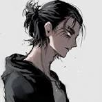

Eren Yeager

Summary
Eren Yeager is the main protagonist of the anime and manga series "Attack on Titan" (Shingeki no Kyojin) created by Hajime Isayama. Initially introduced as a determined and hot-headed youth, Eren dreams of eradicating the Titans, giant humanoid creatures that have pushed humanity to the brink of extinction by trapping them within massive walled cities.
Eduction
- Early Life Education
- Military Training
- Titan Knowledge and Heritage
- Strategic and Moral Understanding
Work expereince
- 104th Training Corps
- Eren joined the 104th Training Corps to learn how to fight Titans and defend humanity.
- Proficiency with Omni-Directional Mobility Gear, hand-to-hand combat,
Skills
- Determination and Resilience
- Strategic Thinking and Leadership
- Combat Skills
Awards and certification
- Hero of Trost
- Retaking of Wall Maria
- Marley Assault
- Graduation from the 104th Training Corps
Other